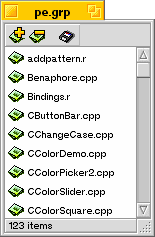

Group Window
The group window is a convenient container for storing often-used documents. The group window only stores references to documents, not the documents themselves. You can add documents, directories or even disks to this group. When double clicked, Pe first checks if the file is a text file by looking at its mimetype. If it is, Pe will try to open the file itself, otherwise the file is passed on to the Tracker to be opened.
To add a document, click the "" icon, or simply drag the document from the Tracker into the group. To remove a document, select it and click the "" icon.
Whenever a group window is closed, its contents are saved to a file. If you save it for the first time you will be given a Save File Dialog to name it. You can force a save by typing Command-S when the group window is the active window.
Recovering a group window
If you accidentally destroy the mimetype of the file of a group window, the group window will be opened in Pe as a plain text file displaying all the paths for the items of this group window. If this happens, you can use FileTypes to give back to this file its correct mimetype. The correct mimetype is "text/x-vnd.Hekkel-Pe-Group".
Last updated: 05/17/98
Copyright 1997,1998, © Hekkelman Programmatuur,
info@hekkelman.com